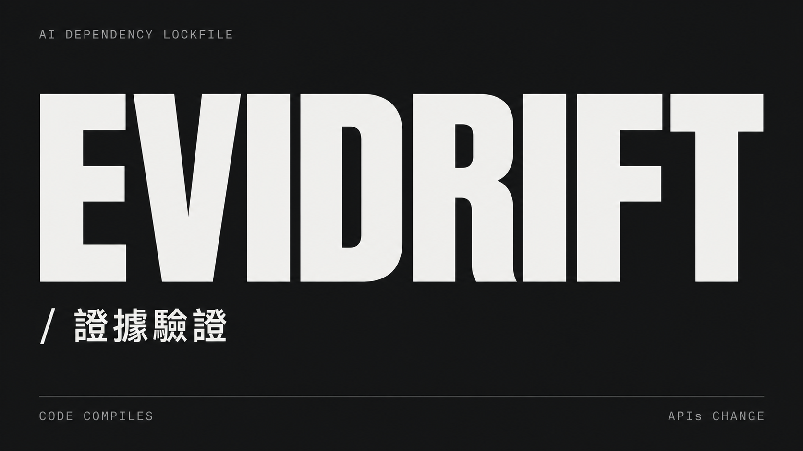
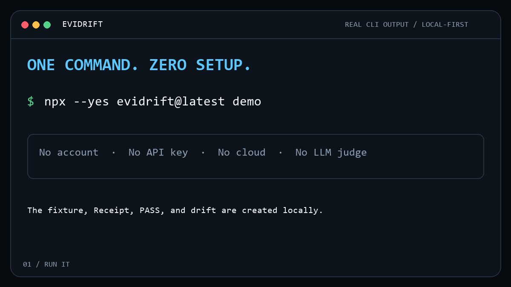

TypeScript API drift
Lock the overload selected at a real call site, its parameter, normalized signature, installed version, resolved declaration path, and hash.
Evidrift locks the TypeScript and OpenAPI assumptions your coding agent relied on, then rechecks them in CI before the next merge.

Receipts are repository files, not trusted verdicts. Evidrift reloads the source and recalculates the deterministic contract every time.
Lock the overload selected at a real call site, its parameter, normalized signature, installed version, resolved declaration path, and hash.
Lock one canonical value in repository-local OpenAPI JSON or JSON Schema through RFC 6901 JSON Pointer.
Treat every Receipt as hostile input. Recompute content IDs and evidence hashes
instead of trusting stored matched or verified flags.
npx --yes evidrift@latest demo
Rendered from a real local CLI transcript. No package code, cloud service, or LLM verdict is involved.
FAIL contract_mismatch sha256:...
Claim: parseConfig accepts an optional options parameter used by the demo.
Expected signature: parseConfig(input:string,options?:ParseOptions):ParseResult
Current signature: parseConfig(input:string,options:ParseOptions):ParseResult
Affected code location: app/src/index.ts:3
Receipt ID: sha256:...
Action: Review the dependency change, then intentionally record new evidence.API drift is a change to a dependency or contract after code was written against it. Evidrift checks the selected TypeScript call signature or repository-local JSON value.
It is narrower. Contract tests exercise provider and consumer behavior. Evidrift locks one explicit static assumption and checks it without running dependency code or services.
Yes. Any MCP client that launches a local STDIO server can call Evidrift. All integrations use the same core as the CLI.
No. It proves only that deterministic evidence still matches and that stored Receipt content passes integrity checks. Runtime correctness and semantic truth remain separate.